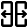

PLACE-IN Floor Editor
Undo
Redo
Select draw item
Create wall
Create rect wall
Create rect wall while cleaning internal
Create window
Create door

Split wall
Erase selected object
Clear all objects
Request review drawing
100%
Help
import from PublicAI
[ { "type": "STR", "categories": [ { "category": 0, "objects": [ { "type": "line", "data": [ [ 120.5, 298.5 ], [ 120.5, 322.5 ] ], "radius": 4.5 }, { "type": "line", "data": [ [ 120.5, 322.5 ], [ 141.5, 322.5 ] ], "radius": 4.5 }, { "type": "line", "data": [ [ 141.5, 322.5 ], [ 141.5, 342.5 ] ], "radius": 4.5 }, { "type": "line", "data": [ [ 141.5, 342.5 ], [ 178.5, 342.5 ] ], "radius": 4.5 }, { "type": "line", "data": [ [ 178.5, 342.5 ], [ 178.5, 354.5 ] ], "radius": 4.5 }, { "type": "line", "data": [ [ 178.5, 354.5 ], [ 293.5, 354.5 ] ], "radius": 4.5 }, { "type": "line", "data": [ [ 293.5, 354.5 ], [ 293.5, 346.5 ] ], "radius": 4.5 }, { "type": "line", "data": [ [ 293.5, 346.5 ], [ 358.5, 346.5 ] ], "radius": 4.5 }, { "type": "line", "data": [ [ 358.5, 346.5 ], [ 358.5, 158.5 ] ], "radius": 4.5 }, { "type": "line", "data": [ [ 358.5, 158.5 ], [ 217.5, 158.5 ] ], "radius": 4.5 }, { "type": "line", "data": [ [ 217.5, 158.5 ], [ 217.5, 163.5 ] ], "radius": 4.5 }, { "type": "line", "data": [ [ 217.5, 163.5 ], [ 148.5, 163.5 ] ], "radius": 4.5 }, { "type": "line", "data": [ [ 148.5, 163.5 ], [ 148.5, 236.5 ] ], "radius": 4.5 }, { "type": "line", "data": [ [ 148.5, 236.5 ], [ 121.5, 236.5 ] ], "radius": 4.5 }, { "type": "line", "data": [ [ 121.5, 236.5 ], [ 121.5, 244.5 ] ], "radius": 4.5 }, { "type": "line", "data": [ [ 121.5, 244.5 ], [ 116.5, 244.5 ] ], "radius": 4.5 }, { "type": "line", "data": [ [ 116.5, 244.5 ], [ 116.5, 269.5 ] ], "radius": 4.5 }, { "type": "line", "data": [ [ 116.5, 269.5 ], [ 120.5, 269.5 ] ], "radius": 4.5 }, { "type": "line", "data": [ [ 120.5, 269.5 ], [ 120.5, 298.5 ] ], "radius": 4.5 } ] }, { "category": 1, "objects": [ { "type": "line", "data": [ [ 286.1333333333333, 181.28571428571428 ], [ 293.35, 181.28571428571428 ] ], "radius": 2 }, { "type": "line", "data": [ [ 293.35, 181.28571428571428 ], [ 340.22857142857146, 181.28571428571428 ] ], "radius": 2 }, { "type": "line", "data": [ [ 218.5, 185.48571428571427 ], [ 261.125, 185.48571428571427 ] ], "radius": 2 }, { "type": "line", "data": [ [ 149.0, 185.48571428571427 ], [ 159.0, 185.48571428571427 ] ], "radius": 2 }, { "type": "line", "data": [ [ 149.0, 185.48571428571427 ], [ 148.5, 185.48571428571427 ] ], "radius": 2 }, { "type": "line", "data": [ [ 159.0, 185.48571428571427 ], [ 178.5, 185.48571428571427 ] ], "radius": 2 }, { "type": "line", "data": [ [ 178.5, 185.48571428571427 ], [ 180.44285714285715, 185.48571428571427 ] ], "radius": 2 }, { "type": "line", "data": [ [ 261.125, 191.3 ], [ 284.3333333333333, 191.3 ] ], "radius": 2 }, { "type": "line", "data": [ [ 284.3333333333333, 191.3 ], [ 293.35, 191.3 ] ], "radius": 2 }, { "type": "line", "data": [ [ 180.44285714285715, 188.3 ], [ 218.5, 188.3 ] ], "radius": 2 }, { "type": "line", "data": [ [ 148.5, 227.23333333333335 ], [ 159.0, 227.23333333333335 ] ], "radius": 2 }, { "type": "line", "data": [ [ 148.5, 227.23333333333335 ], [ 148.5, 227.23333333333335 ] ], "radius": 2 }, { "type": "line", "data": [ [ 159.0, 227.23333333333335 ], [ 180.44285714285715, 227.23333333333335 ] ], "radius": 2 }, { "type": "line", "data": [ [ 151.0, 245.58333333333334 ], [ 180.44285714285715, 245.58333333333334 ] ], "radius": 2 }, { "type": "line", "data": [ [ 180.44285714285715, 245.58333333333334 ], [ 218.5, 245.58333333333334 ] ], "radius": 2 }, { "type": "line", "data": [ [ 218.5, 245.58333333333334 ], [ 261.125, 245.58333333333334 ] ], "radius": 2 }, { "type": "line", "data": [ [ 261.125, 245.58333333333334 ], [ 284.3333333333333, 245.58333333333334 ] ], "radius": 2 }, { "type": "line", "data": [ [ 284.3333333333333, 245.58333333333334 ], [ 294.9, 245.58333333333334 ] ], "radius": 2 }, { "type": "line", "data": [ [ 120.5, 270.4 ], [ 144.725, 270.4 ] ], "radius": 2 }, { "type": "line", "data": [ [ 120.5, 270.4 ], [ 120.5, 270.4 ] ], "radius": 2 }, { "type": "line", "data": [ [ 144.725, 270.4 ], [ 183.44285714285715, 270.4 ] ], "radius": 2 }, { "type": "line", "data": [ [ 224.1, 270.4 ], [ 240.0, 270.4 ] ], "radius": 2 }, { "type": "line", "data": [ [ 240.0, 270.4 ], [ 289.1333333333333, 270.4 ] ], "radius": 2 }, { "type": "line", "data": [ [ 183.44285714285715, 277.05 ], [ 207.5, 277.05 ] ], "radius": 2 }, { "type": "line", "data": [ [ 207.5, 277.05 ], [ 224.1, 277.05 ] ], "radius": 2 }, { "type": "line", "data": [ [ 122.0, 295.6 ], [ 144.725, 295.6 ] ], "radius": 2 }, { "type": "line", "data": [ [ 122.0, 295.6 ], [ 120.5, 295.6 ] ], "radius": 2 }, { "type": "line", "data": [ [ 144.725, 320.0833333333333 ], [ 183.44285714285715, 320.0833333333333 ] ], "radius": 2 }, { "type": "line", "data": [ [ 183.44285714285715, 320.0833333333333 ], [ 190.75, 320.0833333333333 ] ], "radius": 2 }, { "type": "line", "data": [ [ 289.1333333333333, 315.2833333333333 ], [ 340.22857142857146, 315.2833333333333 ] ], "radius": 2 }, { "type": "line", "data": [ [ 207.5, 328.8666666666667 ], [ 240.0, 328.8666666666667 ] ], "radius": 2 }, { "type": "line", "data": [ [ 240.0, 328.8666666666667 ], [ 289.1333333333333, 328.8666666666667 ] ], "radius": 2 }, { "type": "line", "data": [ [ 183.44285714285715, 330.1 ], [ 190.75, 330.1 ] ], "radius": 2 }, { "type": "line", "data": [ [ 190.75, 330.1 ], [ 207.5, 330.1 ] ], "radius": 2 }, { "type": "line", "data": [ [ 144.725, 270.4 ], [ 144.725, 295.6 ] ], "radius": 2 }, { "type": "line", "data": [ [ 144.725, 295.6 ], [ 144.725, 320.0833333333333 ] ], "radius": 2 }, { "type": "line", "data": [ [ 151.0, 245.58333333333334 ], [ 151.0, 235.0 ] ], "radius": 2 }, { "type": "line", "data": [ [ 151.0, 236.5 ], [ 148.5, 236.5 ] ], "radius": 2 }, { "type": "line", "data": [ [ 159.0, 185.48571428571427 ], [ 159.0, 227.23333333333335 ] ], "radius": 2 }, { "type": "line", "data": [ [ 178.5, 185.48571428571427 ], [ 178.5, 163.5 ] ], "radius": 2 }, { "type": "line", "data": [ [ 178.5, 163.5 ], [ 178.5, 163.5 ] ], "radius": 2 }, { "type": "line", "data": [ [ 183.44285714285715, 270.4 ], [ 183.44285714285715, 277.05 ] ], "radius": 2 }, { "type": "line", "data": [ [ 183.44285714285715, 277.05 ], [ 183.44285714285715, 320.0833333333333 ] ], "radius": 2 }, { "type": "line", "data": [ [ 183.44285714285715, 320.0833333333333 ], [ 183.44285714285715, 330.1 ] ], "radius": 2 }, { "type": "line", "data": [ [ 183.44285714285715, 330.1 ], [ 183.44285714285715, 343.5 ] ], "radius": 2 }, { "type": "line", "data": [ [ 183.44285714285715, 342.5 ], [ 178.5, 342.5 ] ], "radius": 2 }, { "type": "line", "data": [ [ 180.44285714285715, 185.48571428571427 ], [ 180.44285714285715, 188.3 ] ], "radius": 2 }, { "type": "line", "data": [ [ 180.44285714285715, 188.3 ], [ 180.44285714285715, 227.23333333333335 ] ], "radius": 2 }, { "type": "line", "data": [ [ 180.44285714285715, 227.23333333333335 ], [ 180.44285714285715, 245.58333333333334 ] ], "radius": 2 }, { "type": "line", "data": [ [ 190.75, 314.1 ], [ 190.75, 320.0833333333333 ] ], "radius": 2 }, { "type": "line", "data": [ [ 190.75, 320.0833333333333 ], [ 190.75, 330.1 ] ], "radius": 2 }, { "type": "line", "data": [ [ 207.5, 277.05 ], [ 207.5, 328.8666666666667 ] ], "radius": 2 }, { "type": "line", "data": [ [ 207.5, 328.8666666666667 ], [ 207.5, 330.1 ] ], "radius": 2 }, { "type": "line", "data": [ [ 218.5, 185.48571428571427 ], [ 218.5, 188.3 ] ], "radius": 2 }, { "type": "line", "data": [ [ 218.5, 188.3 ], [ 218.5, 245.58333333333334 ] ], "radius": 2 }, { "type": "line", "data": [ [ 224.1, 270.4 ], [ 224.1, 277.05 ] ], "radius": 2 }, { "type": "line", "data": [ [ 224.1, 277.05 ], [ 224.1, 288.7585786437627 ] ], "radius": 2 }, { "type": "line", "data": [ [ 240.0, 270.4 ], [ 240.0, 328.8666666666667 ] ], "radius": 2 }, { "type": "line", "data": [ [ 261.125, 185.48571428571427 ], [ 261.125, 191.3 ] ], "radius": 2 }, { "type": "line", "data": [ [ 261.125, 191.3 ], [ 261.125, 245.58333333333334 ] ], "radius": 2 }, { "type": "line", "data": [ [ 289.1333333333333, 270.4 ], [ 289.1333333333333, 315.2833333333333 ] ], "radius": 2 }, { "type": "line", "data": [ [ 289.1333333333333, 315.2833333333333 ], [ 289.1333333333333, 328.8666666666667 ] ], "radius": 2 }, { "type": "line", "data": [ [ 286.1333333333333, 181.28571428571428 ], [ 286.1333333333333, 158.5 ] ], "radius": 2 }, { "type": "line", "data": [ [ 286.1333333333333, 158.5 ], [ 286.1333333333333, 158.5 ] ], "radius": 2 }, { "type": "line", "data": [ [ 284.3333333333333, 191.3 ], [ 284.3333333333333, 245.58333333333334 ] ], "radius": 2 }, { "type": "line", "data": [ [ 293.35, 158.5 ], [ 293.35, 181.28571428571428 ] ], "radius": 2 }, { "type": "line", "data": [ [ 293.35, 158.5 ], [ 293.35, 158.5 ] ], "radius": 2 }, { "type": "line", "data": [ [ 293.35, 181.28571428571428 ], [ 293.35, 191.3 ] ], "radius": 2 }, { "type": "line", "data": [ [ 340.22857142857146, 181.28571428571428 ], [ 340.22857142857146, 315.2833333333333 ] ], "radius": 2 } ] }, { "category": 2, "objects": [ { "type": "line", "data": [ [ 252.0, 328.8666666666667 ], [ 280.0, 328.8666666666667 ] ], "radius": 2 }, { "type": "line", "data": [ [ 217.0, 328.8666666666667 ], [ 230.0, 328.8666666666667 ] ], "radius": 2 }, { "type": "line", "data": [ [ 154.0, 320.0833333333333 ], [ 175.0, 320.0833333333333 ] ], "radius": 2 }, { "type": "line", "data": [ [ 310.0, 315.2833333333333 ], [ 334.0, 315.2833333333333 ] ], "radius": 2 }, { "type": "line", "data": [ [ 340.22857142857146, 276.0 ], [ 340.22857142857146, 306.0 ] ], "radius": 2 }, { "type": "line", "data": [ [ 340.22857142857146, 199.0 ], [ 340.22857142857146, 229.0 ] ], "radius": 2 }, { "type": "line", "data": [ [ 310.0, 346.5 ], [ 335.0, 346.5 ] ], "radius": 2 }, { "type": "line", "data": [ [ 251.0, 354.5 ], [ 280.0, 354.5 ] ], "radius": 2 }, { "type": "line", "data": [ [ 217.0, 354.5 ], [ 230.0, 354.5 ] ], "radius": 2 }, { "type": "line", "data": [ [ 190.0, 354.5 ], [ 200.0, 354.5 ] ], "radius": 2 }, { "type": "line", "data": [ [ 154.0, 342.5 ], [ 175.0, 342.5 ] ], "radius": 2 }, { "type": "line", "data": [ [ 129.0, 322.5 ], [ 139.0, 322.5 ] ], "radius": 2 }, { "type": "line", "data": [ [ 358.5, 314.0 ], [ 358.5, 258.0 ] ], "radius": 2 }, { "type": "line", "data": [ [ 358.5, 229.0 ], [ 358.5, 199.0 ] ], "radius": 2 }, { "type": "line", "data": [ [ 208.0, 163.5 ], [ 187.0, 163.5 ] ], "radius": 2 }, { "type": "line", "data": [ [ 171.0, 163.5 ], [ 157.0, 163.5 ] ], "radius": 2 }, { "type": "line", "data": [ [ 325.0, 158.5 ], [ 304.0, 158.5 ] ], "radius": 2 }, { "type": "line", "data": [ [ 283.0, 158.5 ], [ 266.0, 158.5 ] ], "radius": 2 }, { "type": "line", "data": [ [ 258.0, 158.5 ], [ 248.0, 158.5 ] ], "radius": 2 }, { "type": "line", "data": [ [ 242.0, 158.5 ], [ 223.0, 158.5 ] ], "radius": 2 } ] }, { "category": 3, "objects": [ { "type": "line", "data": [ [ 207.5, 315.0 ], [ 207.5, 320.0 ] ], "radius": 2, "hinge": "start", "direction": "right" }, { "type": "line", "data": [ [ 207.5, 297.0 ], [ 207.5, 308.0 ] ], "radius": 2, "hinge": "start", "direction": "right" }, { "type": "line", "data": [ [ 130.0, 295.6 ], [ 139.0, 295.6 ] ], "radius": 2, "hinge": "start", "direction": "right" }, { "type": "line", "data": [ [ 207.5, 290.0 ], [ 207.5, 295.0 ] ], "radius": 2, "hinge": "start", "direction": "right" }, { "type": "line", "data": [ [ 225.0, 270.4 ], [ 237.0, 270.4 ] ], "radius": 2, "hinge": "start", "direction": "right" }, { "type": "line", "data": [ [ 171.0, 270.4 ], [ 182.0, 270.4 ] ], "radius": 2, "hinge": "start", "direction": "right" }, { "type": "line", "data": [ [ 129.0, 270.4 ], [ 140.0, 270.4 ] ], "radius": 2, "hinge": "start", "direction": "left" }, { "type": "line", "data": [ [ 116.5, 248.0 ], [ 116.5, 266.0 ] ], "radius": 2, "hinge": "start", "direction": "right" }, { "type": "line", "data": [ [ 262.0, 245.58333333333334 ], [ 273.0, 245.58333333333334 ] ], "radius": 2, "hinge": "start", "direction": "left" }, { "type": "line", "data": [ [ 220.0, 245.58333333333334 ], [ 231.0, 245.58333333333334 ] ], "radius": 2, "hinge": "start", "direction": "left" }, { "type": "line", "data": [ [ 181.0, 245.58333333333334 ], [ 192.0, 245.58333333333334 ] ], "radius": 2, "hinge": "start", "direction": "left" }, { "type": "line", "data": [ [ 160.0, 227.23333333333335 ], [ 168.0, 227.23333333333335 ] ], "radius": 2, "hinge": "start", "direction": "left" }, { "type": "line", "data": [ [ 159.0, 198.0 ], [ 159.0, 204.0 ] ], "radius": 2, "hinge": "start", "direction": "left" }, { "type": "line", "data": [ [ 267.0, 191.3 ], [ 277.0, 191.3 ] ], "radius": 2, "hinge": "start", "direction": "left" }, { "type": "line", "data": [ [ 178.5, 181.0 ], [ 178.5, 170.0 ] ], "radius": 2, "hinge": "start", "direction": "right" }, { "type": "line", "data": [ [ 314.0, 181.28571428571428 ], [ 324.0, 181.28571428571428 ] ], "radius": 2, "hinge": "start", "direction": "left" } ] } ] }, { "type": "SPA", "categories": [ { "category": 0, "objects": [ { "type": "Polygon", "data": [ [ 261.125, 191.3 ], [ 261.125, 245.58333333333334 ], [ 284.3333333333333, 245.58333333333334 ], [ 284.3333333333333, 191.3 ] ], "radius": 0 } ] }, { "category": 1, "objects": [] }, { "category": 2, "objects": [] }, { "category": 3, "objects": [] }, { "category": 4, "objects": [] }, { "category": 5, "objects": [] }, { "category": 6, "objects": [] }, { "category": 7, "objects": [] }, { "category": 8, "objects": [] }, { "category": 9, "objects": [] }, { "category": 10, "objects": [] }, { "category": 11, "objects": [] }, { "category": 12, "objects": [ { "type": "Polygon", "data": [ [ 151.00011495239787, 245.58321838093548 ], [ 151.0, 245.5808784711224 ], [ 151.0, 236.5 ], [ 121.5, 236.5 ], [ 121.5, 244.5 ], [ 116.5, 244.5 ], [ 116.5, 269.5 ], [ 120.5, 269.5 ], [ 120.5, 270.4 ], [ 183.44040228064637, 270.4 ], [ 183.44274219045928, 270.40011495239787 ], [ 183.44285714285715, 270.4024548622109 ], [ 183.44285714285715, 277.05 ], [ 224.1, 277.05 ], [ 224.1, 270.4024548622109 ], [ 224.10011495239786, 270.40011495239787 ], [ 224.10245486221078, 270.4 ], [ 289.1308784711225, 270.4 ], [ 289.13321838093543, 270.40011495239787 ], [ 289.1333333333333, 270.4024548622108 ], [ 289.1333333333333, 315.2833333333333 ], [ 340.22857142857146, 315.2833333333333 ], [ 340.22857142857146, 181.28571428571428 ], [ 293.35, 181.28571428571428 ], [ 293.35, 191.29754513778923 ], [ 293.34988504760213, 191.29988504760215 ], [ 293.3475451377891, 191.3 ], [ 284.3333333333333, 191.3 ], [ 284.3333333333333, 245.58333333333334 ], [ 151.00245486221095, 245.58333333333334 ] ], "radius": 0 } ] }, { "category": 13, "objects": [ { "type": "Polygon", "data": [ [ 218.5, 245.58333333333334 ], [ 261.125, 245.58333333333334 ], [ 261.125, 185.48571428571427 ], [ 218.5, 185.48571428571427 ] ], "radius": 0 }, { "type": "Polygon", "data": [ [ 180.44285714285715, 188.3 ], [ 180.44285714285715, 245.58333333333334 ], [ 218.5, 245.58333333333334 ], [ 218.5, 188.3 ] ], "radius": 0 }, { "type": "Polygon", "data": [ [ 144.725, 320.0833333333333 ], [ 183.44285714285715, 320.0833333333333 ], [ 183.44285714285715, 270.4 ], [ 144.725, 270.4 ] ], "radius": 0 }, { "type": "Polygon", "data": [ [ 240.0, 328.8666666666667 ], [ 289.1333333333333, 328.8666666666667 ], [ 289.1333333333333, 270.4 ], [ 240.0, 270.4 ] ], "radius": 0 } ] }, { "category": 14, "objects": [] }, { "category": 15, "objects": [] }, { "category": 16, "objects": [ { "type": "Polygon", "data": [ [ 178.5, 185.48571428571427 ], [ 180.4404022806462, 185.48571428571427 ], [ 180.44274219045928, 185.48582923811213 ], [ 180.44285714285715, 185.48816914792522 ], [ 180.44285714285715, 188.3 ], [ 218.5, 188.3 ], [ 218.5, 185.48816914792522 ], [ 218.50011495239787, 185.48582923811213 ], [ 218.50245486221095, 185.48571428571427 ], [ 261.1225451377891, 185.48571428571427 ], [ 261.1248850476021, 185.48582923811213 ], [ 261.125, 185.48816914792505 ], [ 261.125, 191.3 ], [ 293.35, 191.3 ], [ 293.35, 181.28571428571428 ], [ 286.13578819554425, 181.28571428571428 ], [ 286.1334482857312, 181.2855993333164 ], [ 286.1333333333333, 181.2832594235035 ], [ 286.1333333333333, 158.5 ], [ 217.5, 158.5 ], [ 217.5, 163.5 ], [ 178.5, 163.5 ] ], "radius": 0 }, { "type": "Polygon", "data": [ [ 183.44285714285715, 342.5 ], [ 178.5, 342.5 ], [ 178.5, 354.5 ], [ 293.5, 354.5 ], [ 293.5, 346.5 ], [ 358.5, 346.5 ], [ 358.5, 158.5 ], [ 293.35, 158.5 ], [ 293.35, 181.28571428571428 ], [ 340.22611656636053, 181.28571428571428 ], [ 340.22845647617356, 181.28582923811214 ], [ 340.22857142857146, 181.28816914792506 ], [ 340.22857142857146, 315.2808784711225 ], [ 340.22845647617356, 315.2832183809354 ], [ 340.22611656636064, 315.2833333333333 ], [ 289.1333333333333, 315.2833333333333 ], [ 289.1333333333333, 328.86421180445586 ], [ 289.13321838093543, 328.8665517142688 ], [ 289.1308784711225, 328.8666666666667 ], [ 207.5, 328.8666666666667 ], [ 207.5, 330.0975451377891 ], [ 207.49988504760213, 330.09988504760213 ], [ 207.49754513778922, 330.1 ], [ 183.44285714285715, 330.1 ] ], "radius": 0 }, { "type": "Polygon", "data": [ [ 144.72511495239786, 320.0832183809354 ], [ 144.725, 320.0808784711224 ], [ 144.725, 295.6 ], [ 120.5, 295.6 ], [ 120.5, 322.5 ], [ 141.5, 322.5 ], [ 141.5, 342.5 ], [ 183.44285714285715, 342.5 ], [ 183.44285714285715, 320.0833333333333 ], [ 144.72745486221078, 320.0833333333333 ] ], "radius": 0 } ] }, { "category": 17, "objects": [ { "type": "Polygon", "data": [ [ 159.0, 227.23333333333335 ], [ 180.44285714285715, 227.23333333333335 ], [ 180.44285714285715, 185.48571428571427 ], [ 159.0, 185.48571428571427 ] ], "radius": 0 }, { "type": "Polygon", "data": [ [ 183.44285714285715, 277.05 ], [ 183.44285714285715, 320.0833333333333 ], [ 190.75, 320.0833333333333 ], [ 190.75, 330.1 ], [ 207.5, 330.1 ], [ 207.5, 277.05 ] ], "radius": 0 } ] }, { "category": 18, "objects": [] }, { "category": 19, "objects": [ { "type": "Polygon", "data": [ [ 224.1, 277.05 ], [ 207.5, 277.05 ], [ 207.5, 328.8666666666667 ], [ 240.0, 328.8666666666667 ], [ 240.0, 270.4 ], [ 224.1, 270.4 ] ], "radius": 0 } ] }, { "category": 20, "objects": [] }, { "category": 21, "objects": [ { "type": "Polygon", "data": [ [ 151.0, 236.5 ], [ 151.0, 245.58333333333334 ], [ 180.44285714285715, 245.58333333333334 ], [ 180.44285714285715, 227.23333333333335 ], [ 148.5, 227.23333333333335 ], [ 148.5, 236.5 ] ], "radius": 0 }, { "type": "Polygon", "data": [ [ 159.0, 227.23333333333335 ], [ 159.0, 185.48571428571427 ], [ 148.5, 185.48571428571427 ], [ 148.5, 227.23333333333335 ] ], "radius": 0 }, { "type": "Polygon", "data": [ [ 178.5, 185.48571428571427 ], [ 178.5, 163.5 ], [ 148.5, 163.5 ], [ 148.5, 185.48571428571427 ] ], "radius": 0 }, { "type": "Polygon", "data": [ [ 293.35, 181.28571428571428 ], [ 293.35, 158.5 ], [ 286.1333333333333, 158.5 ], [ 286.1333333333333, 181.28571428571428 ] ], "radius": 0 }, { "type": "Polygon", "data": [ [ 144.725, 295.6 ], [ 144.725, 270.4 ], [ 120.5, 270.4 ], [ 120.5, 295.6 ] ], "radius": 0 }, { "type": "Polygon", "data": [ [ 183.44285714285715, 330.1 ], [ 190.75, 330.1 ], [ 190.75, 320.0833333333333 ], [ 183.44285714285715, 320.0833333333333 ] ], "radius": 0 } ] }, { "category": 22, "objects": [] } ] } ]